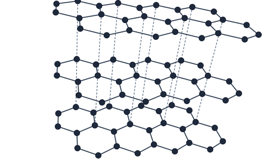
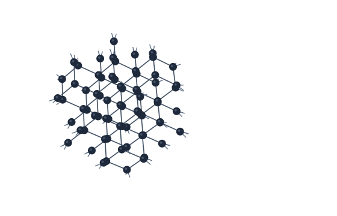
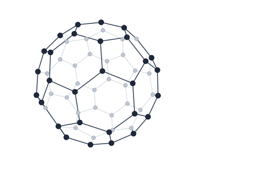
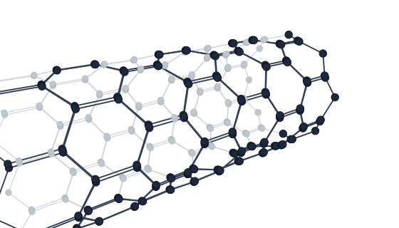

Carbon allotropes (GCSE)
Updated from reference images. Files in images/carbon-allotropes/.
1. Graphite (stacked layers with clear gaps)

2. Diamond (dense tetrahedral lattice)

3. Buckminsterfullerene (no shaded panels)

4. Carbon nanotube (three-quarter + open end)
